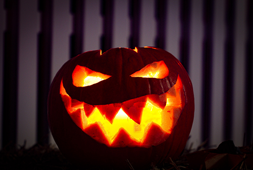

What is Pumpkin Carving?
Pumpkin carving is an iconic part of Halloween tradition, with households around the country displaying these glowing lanterns on their doorsteps and windowsills when the 31st October comes around. Whether you’re creating a ghoulish face or a cheeky grin on your squash, it's something people of all ages can get stuck into, and makes a great evening activity as the nights draw in. Here’s our guide to getting your pumpkin ready for the spooky season!

You will need:

Method :
- Take your pumpkin and place on a firm, flat surface. You might want to do this outside, or put newspaper down as it can get messy.
- Take the large serrated knife and cut a circle around the crown. Put this to one side.
- Using the spoon, scoop out the pulp and seeds, before carving out the inner flesh with the large serrated knife. Don’t throw these away! You can roast the seeds later for a healthy snack, and use the leftover flesh in soups and pies. Leave about 1-2” of flesh inside the pumpkin to allow more light to shine through.
- Using the marker pen, draw on the design you’d like. Alternatively, you can stick on a printed template, and using the point of the knife, poke through the rough outline of the template before removing the paper.
- Using the small knife, begin carving out your design. Take your time!
- Rub some lemon juice onto the exposed carved areas to help stop them turning brown.
- Add a couple of tealights and replace the crown. Voila! Your pumpkin is ready to go.